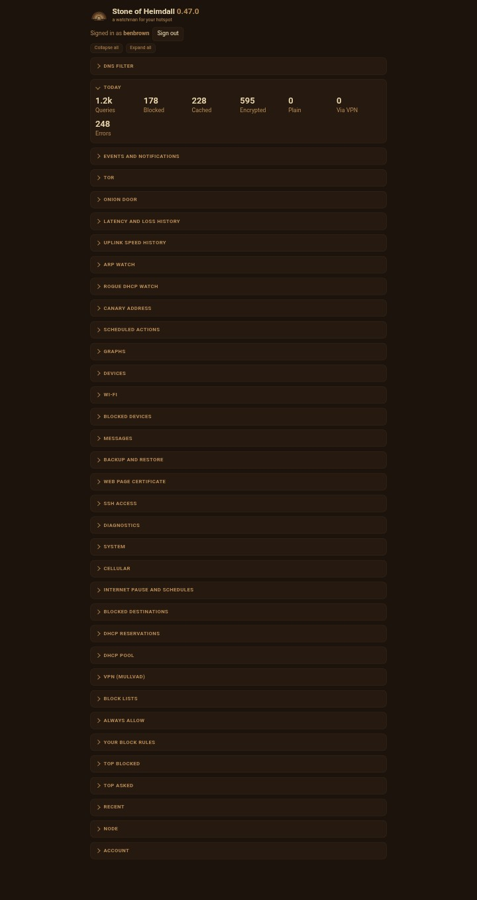

Privacy firmware for the Orbic RC400L cellular hotspot. It replaces the stock admin page and decides, with you, what your devices get to do.
A hotspot is a router you never got to configure. Out of the box it sends every DNS query to the carrier in the clear, resolves tracker domains like anything else, and forwards whatever connection any device feels like opening. There's no filter, no log and no switch. This is the filter, the log and the switch, running on the hotspot itself, so every device is covered without touching any of them.
Every lookup leaves as DoH, or inside the VPN, or over Tor. Plain port 53 and DoT are refused on the cellular side, so no device can route around it.
Published block lists, your own wildcard rules, per-device profiles, and a "Why?" box that tells you exactly which list or rule blocked a name.
Devices get only the services you tick. Web, QUIC, NTP, ssh, email and push start on. Calls, consoles, torrents, remote desktop and the rest start off.
Direct, Mullvad WireGuard with a kill switch, or Tor, chosen by device. A dead tunnel blocks instead of leaking.
LAN IPv6 is off by default, because WebRTC will hand a device's real carrier address to any page that asks, tunnel or no tunnel.
The firmware-update and remote-management engines stay suspended.
Default-deny on day one would break everything, because you don't know yet what your devices actually need. So a fresh install starts in monitor mode: it samples the connection table every ten seconds and tallies, per device, what would have been refused. You read the list, tick what you recognise, and only then switch to enforce. Nothing breaks that you didn't choose to break.

A small client-only Tor runs on the box. Any device can open a v3 .onion with no setup: the DNS stub hands back an address from 198.18.0.0/16 and a firewall rule pushes that traffic through a bridge into Tor's SOCKS port. The odd range is deliberate. dnsmasq's rebind protection silently drops answers that point into private space, which was found the hard way: clients saw an empty reply and nothing in any log.
192.168.1.253 is a decoy that no honest device has a reason to touch. The box answers for it, listens on a few tempting ports as a tarpit, and logs anything that pings it, ARPs for it or knocks on a port. Whatever shows up on that list was looking around.
A passive socket sees every ARP frame on the bridge. A stranger claiming the router's address is an alert. An address changing hands inside ten minutes is flagged to look at, because poisoning looks like that, but so does a phone coming back with a fresh random MAC. Honest limit: ARP between two Wi-Fi clients is relayed inside the radio and never reaches the bridge, so the box only sees broadcasts and what's aimed at itself.
The stock firmware's Wi-Fi block list looks like it works. It doesn't, on this driver: a dropped device walked straight back in. So blocked devices go in the firewall, where the block sticks.
An onion service lets you reach the page from anywhere with no open port. Without a listed client key the service isn't even discoverable. Then the normal login. Then read-only, unless you've turned remote write on. No SSH through it, ever.
Written by Claude, Anthropic's model, under the maintainer's direction. The maintainer set the goals, made the calls and tested it on their own hardware, but did not write the code and has not audited it line by line. There's a large test suite and one unit's worth of real use. Read it before you trust it with anything that matters.
One unit, one model, one carrier. The first-install tool has not yet been run end to end from a factory-fresh box. Rooting the hotspot may void its warranty or breach your carrier's terms, and reading some flash partitions freezes the device until a power cycle.
It is not anonymity. The carrier still knows where the hotspot is and when it's online. Mullvad sees what the carrier otherwise would. It doesn't cover physical access, someone on your Wi-Fi guessing the password, a device with its own radio, or holes in the old stock firmware underneath. The threat model has all of this in a table, with a column for where each claim stops.